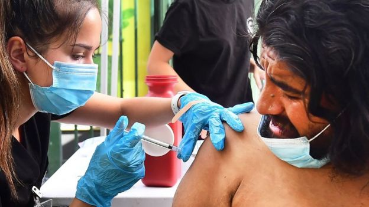
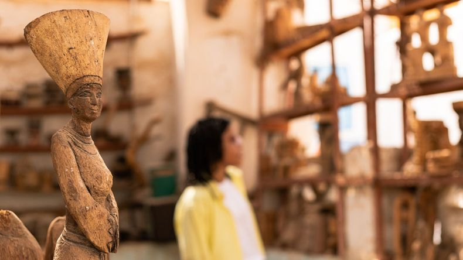
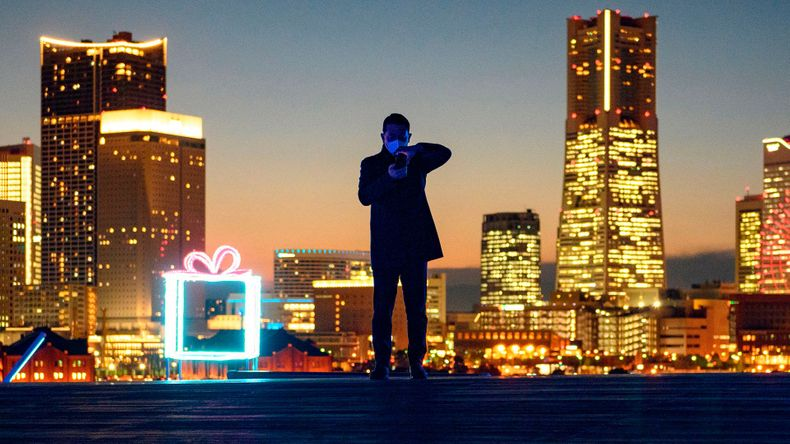
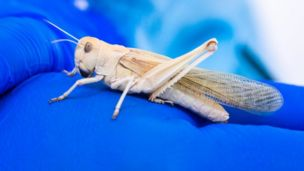
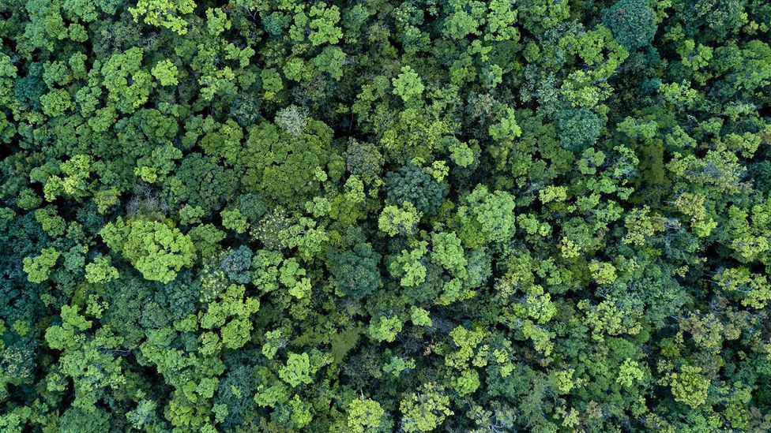
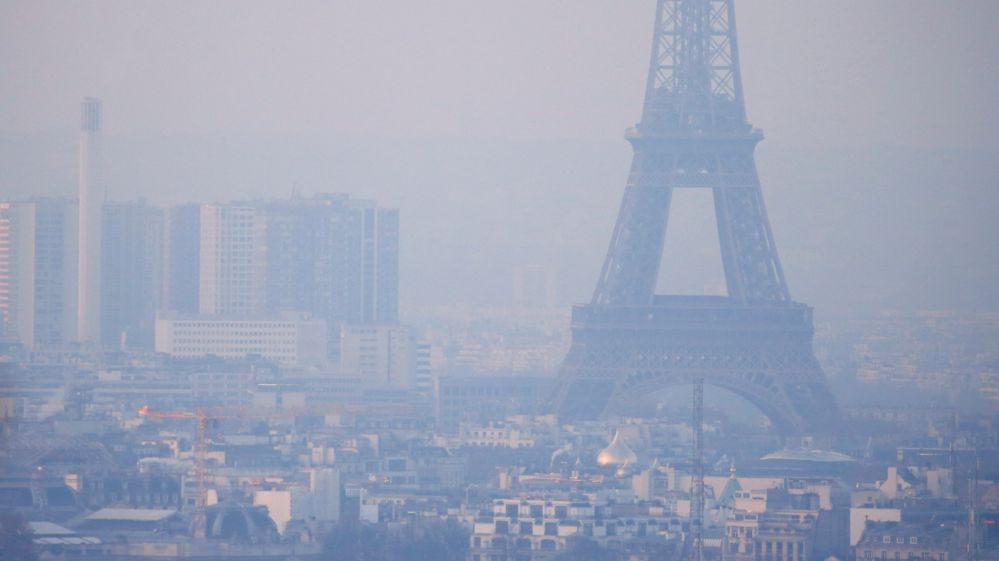
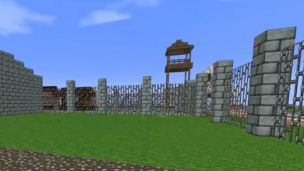
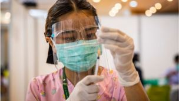

Welcome to BBC.comThursday, 23 September
News
-

US approves Covid booster jabs for some Americans
The move applies to Americans over 65 who were vaccinated with Pfizer, and those at high Covid risk.
US & Canada -
France and US seek to mend rift over Aukus pact
The deal caused outrage in France, which lost a contract to build submarines for Australia.
Europe -
Angry scenes at Haiti airport as migrants arrive
The US is flying migrants out of a Texas border town where 13,000 have gathered in makeshift camps.
Latin America & Caribbean
Sport
-
West Ham knock out Man Utd
West Ham gain revenge for Sunday's Premier League defeat by Manchester United by knocking their hosts out of the Carabao Cup at Old Trafford.
Football -
Hat-trick for Asensio as Real score six
Marco Asensio scores a hat-trick as Real Madrid reclaim top spot in La Liga with an emphatic victory over Mallorca.
European Football -
Delhi beat Sunrisers to go top of IPL
Sunrisers Hyderabad's dismal run in this season's Indian Premier League continues as they lose to Delhi Capitals by eight wickets in Dubai.
Cricket
London Weather
EditThe most amazing videos from the BBC
Editor’s Picks
-

Egypt's drowned ancestral land
A filmmaker is reviving the Nubian culture lost in the building of a dam
Travel -
Striking photos of a lesser-seen Iran
Surprising images that puncture cliches of the country
Culture -
Why job adverts don't include salaries
Why getting employers to reveal salaries is "a game of cat and mouse"
Worklife -

-
Covid therapy from llamas shows promise
An immune therapy derived from llama blood shows "exciting potential" in early coronavirus trials
Science & Environment -

The edible insects coming to a supermarket near you
A number of firms are now farming locusts and mealworms for human consumption
Business -
'Side-eying Chloe', 10, to sell viral meme
The image of Chloe Clem could fetch her tens of thousands of dollars at auction
US & Canada
Solutions for a sustainable world

-
ADVERTISEMENT

![]()

![]()
![]()

Featured video
More around the BBC
-

Air pollution is even worse than we thought - WHO
The WHO is slashing recommended maximum limits of key pollutants as evidence of danger mounts.
Science & Environment -

-

From Our Correspondents
-
Wasps: If you can't love them, at least admire them
-
Biden meets Boris: Shared interests but bumps remain
-
Is the UK headed for a gas shortage this winter?
-
PM aims to push for more climate action during trip
-
Getting Covid in a land where no cases officially exist
-
Why is Biden still banning Britons from US?
-
Next deal keeps Gap brand alive in the UK
-
Amateur astronauts launch on 'inspiration' mission

BBC in other languages
More Languages
- Arabic عربي
- Azeri AZƏRBAYCAN
- Bangla বাংলা
- Burmese မြန်မာ
- Chinese 中文网
- French AFRIQUE
- Hausa HAUSA
- Hindi हिन्दी
- Indonesian INDONESIA
- Japanese 日本語
- Kinyarwanda GAHUZA
- Kirundi KIRUNDI
- Kyrgyz Кыргыз
- Marathi मराठी
- Nepali नेपाली
- Pashto پښتو
- Persian فارسی
- Portuguese BRASIL
- Russian НА РУССКОМ
- Sinhala සිංහල
- Somali SOMALI
- Spanish MUNDO
- Swahili SWAHILI
- Tamil தமிழ்
- Turkish TÜRKÇE
- Ukrainian УКРАЇНСЬКA
- Urdu اردو
- Uzbek O'ZBEK
- Vietnamese TIẾNG VIỆT